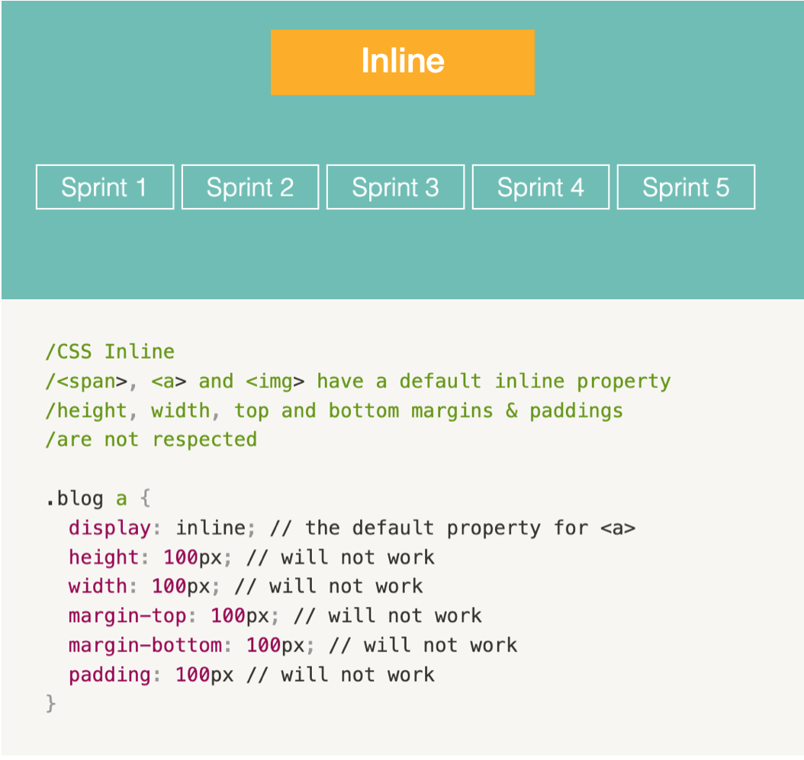
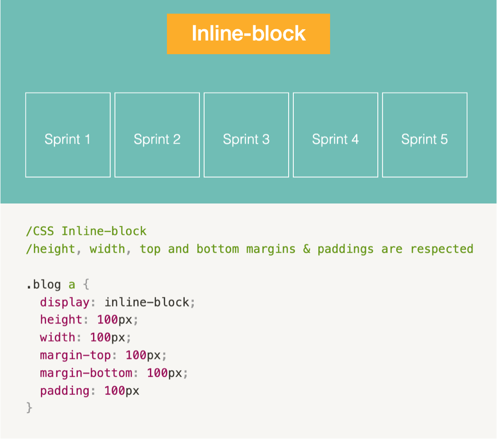

Inline
- Takes up only as much width as necessary, does not force line breaks after it
- span, a, img have a default inline property
- Top and bottom margins & paddings are not respected
Inline-block
- Inline-block allows to set a width and height on the element
- Top and bottom margins & paddings are respected
Code examples


In conclusion, compared to display: inline, the major difference is that display: inline-block allows to set a width and height on the element. Also, with display: inline, top and bottom margins & paddings are not respected, and with display: inline-block they are. You can read more about the inline elements here.